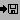

Tutorial Exercise 1.3: Saving the Status of a Graph
Assuming that you are a careful person, you might wish to store the current layout of the graph in a file. As stated before, a file with the term representation of a graph ("*.udg" file) does not contain layout information, so this way your modifications to the layout will be lost in a later session. To store a graph together with information about the current layout (node coordinates etc), you can choose the alternative graph storage format, called status. A status also contains most of the user interface settings, so by loading a status file, a previous session can be restored very easily.
As before you need a file browser to save the current layout to a status file. One way to do so is by selecting menu File/Save As.... But this time we will use the icon bar of the base window for more comfort. Move the mouse pointer to the save button which looks like this:
 Button of the icon bar to save a graph
When the mouse pointer is over this button, a message is displayed in the footer area with a short explanation of the button's function. Now press the button to get the file browser for saving files. Pressing this button on the icon bar is the same as selecting menu File/Save As....
In the file browser, you have to choose the file type you want to save by using the "Types" option button: Either "Status Files" (default) or "Graph Files". Saving the current graph in term representation format by using type "Graph Files" does not make sense at the moment, because the structure of the graph is still the same, which means that you would get the same file as loaded before. So use the default type "Status Files" so the title of the browser window shows "Save As Status".
The browser usually suggests a name for the file you want to save. The file name of the graph (term representation) you have loaded before is "graph_example.udg", so the suggested file name is "graph_example.status". Status files should usually have suffix "*.status". Unfortunately, the suggested file name already exists (as you can see in the Files view of the browser) and you do not want to overwrite it. By the way, the browser will ask you before overwriting files. So choose a new name for your file by editing the selection field of the browser. Click in the field to get a text cursor and erase the file name (but not the directory) with the Backspace key of the keyboard. Then enter a new file name, e.g. "my_graph.status", and press the save push button to start the saving operation.
If you do not have write permissions for the "samples/graphs" directory of the uDraw(Graph) distribution, then saving will fail and a notice window will appear. In this case, open the browser again to repeat this operation, but at this time choose another directory where you have permissions to write, for example your home directory.
End of Exercise 1.3. Go back to the Section 1 Overview.